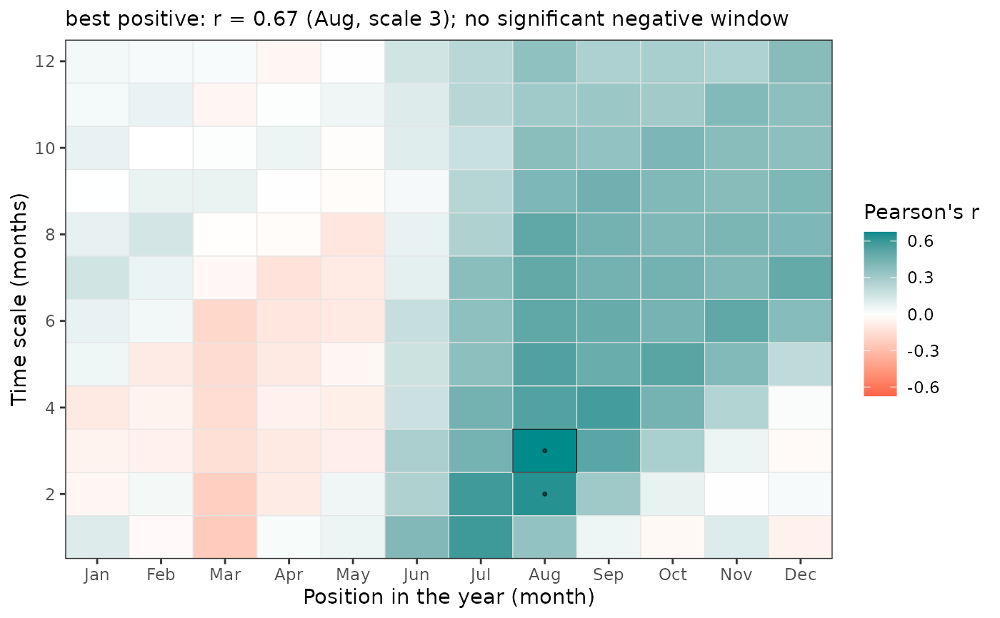
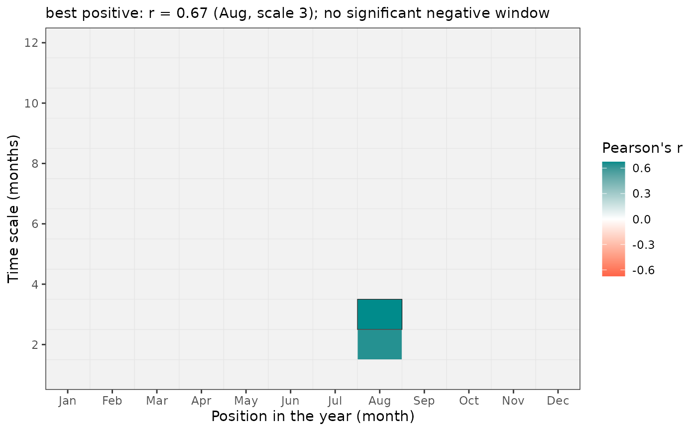
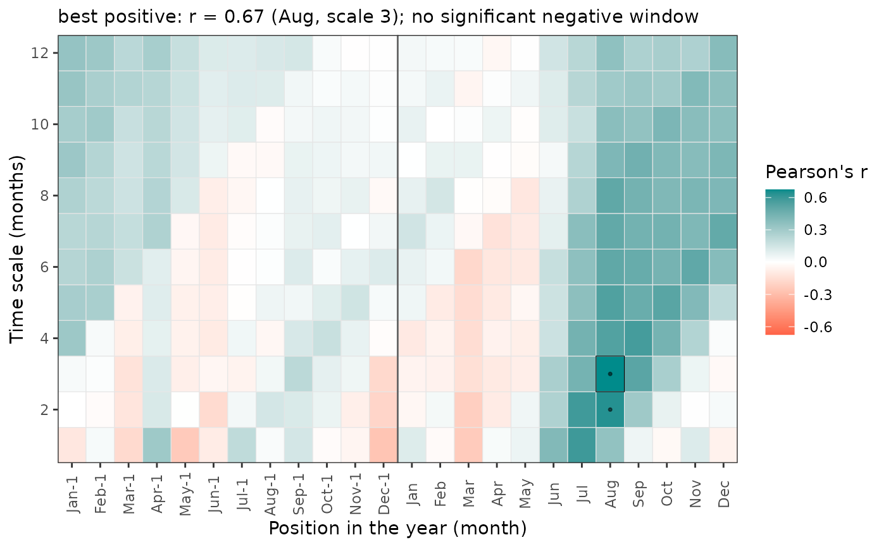
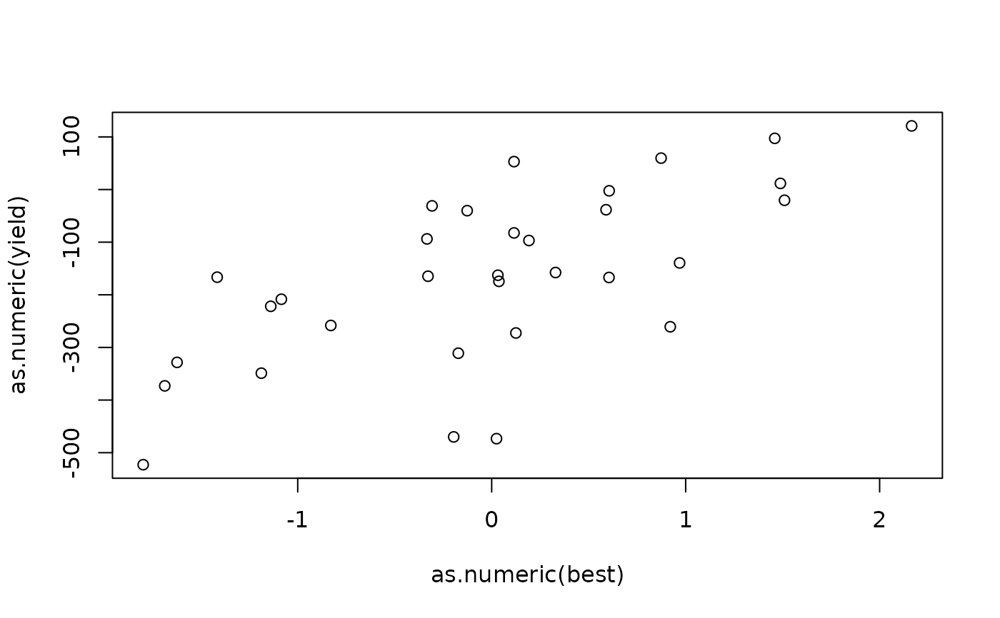

Find the time scale and the time of the year at which a drought index best correlates with an annual series.
Source:R/scale_scan.R
Scale-scan.Rdscale_scan correlates an annual series (for example tree-ring
widths, crop yields or reservoir levels) with the values of a drought
index (SPEI or SPI) at every position of the year (month, week, etc.) and
at every time scale, optionally also in previous years, and finds the
combination of position and time scale (the 'window') with the strongest
positive and negative correlation. scale_extract extracts the
annual series of the index for one window.
Usage
scale_scan(
data,
y,
scales = NULL,
index = 'spei',
lag = 0,
method = 'pearson',
p.adjust = 'holm',
alpha = 0.05,
min.n = 10,
detrend = FALSE,
...)
scale_extract(x, cycle = NULL, scale = NULL, lag = 0, which = 'positive')
# S3 method for class 'scale_scan'
print(x, ...)
# S3 method for class 'scale_scan'
summary(object, ...)
# S3 method for class 'scale_scan'
plot(x, sig = 'mark', main = NULL, ...)
scale_extract(x, cycle = NULL, scale = NULL, lag = 0, which = "positive")
# S3 method for class 'scale_scan'
print(x, ...)
# S3 method for class 'scale_scan'
summary(object, ...)
# S3 method for class 'scale_scan'
plot(x, sig = "mark", main = NULL, ...)Arguments
- data
a univariate or multivariate time series (
ts) object. Its frequency (12 for monthly data, 52 for weekly data, etc.) and the functioncycledetermine the position of each value in the year. Ifindexis'spei'or'spi', a univariate series of the climatic water balance (for the SPEI) or of precipitation (for the SPI). Ifindexis'precomputed', a series of index values with one column per time scale.- y
the annual series. Either a time series with frequency 1, with one or more columns; or a data frame or a numeric matrix whose first column has the years and whose other columns have the values. Years can be repeated. All the values of the same year (several columns, several rows, or both) are averaged into one value. See 'Several annual series'.
- scales
a vector of positive integers with the time scales. If
indexis'spei'or'spi', the index is computed at each of these scales; defaults to1:24. Ifindexis'precomputed', the time scale of each column ofdata; defaults to the column names ofdataif they are numbers (with any non-numeric prefix, such as 'SPEI-' or 'X', removed), and to1:ncol(data)otherwise.- index
one of
'spei'(default),'spi'or'precomputed'. Seedata.- lag
a vector of non-negative integers: the years before the year of the annual series in which the index is also scanned. Defaults to 0 (the same year only). For example,
lag = 0:1also correlates the annual series of year Y with the index of year Y-1. Inscale_extract, a single value.- method
the correlation coefficient, one of
'pearson'(default),'spearman'or'kendall'. Passed tocor.test.- p.adjust
the method used to adjust the p-values for multiple testing, one of
p.adjust.methods. Defaults to'holm'. Use'none'for no adjustment.- alpha
the significance level. Defaults to 0.05.
- min.n
the minimum number of years with values of both the annual series and the index needed to compute a correlation. Cells with fewer years are set to
NA. Defaults to 10.- detrend
logical, remove a linear trend from the annual series (after averaging) before computing the correlations. Defaults to
FALSE.- ...
further options passed to
speiorspi(e.g.distribution,kernel,ref.start,ref.end,na.rm).verbosedefaults toFALSE. Not used ifindexis'precomputed'.- x
an object of class
scale_scan.- cycle
the position in the year (1 to the frequency of
data) of the window.- scale
the time scale of the window. Must be one of the scales used in the scan.
- which
used when
cycleandscaleare not given: the best window to extract, either'positive'(default) or'negative'. Its lag is used, and the argumentlagignored.- object
an object of class
scale_scan.- sig
how to show the significance of the correlations in the plot:
'mark'(default),'mask'or'none'. See 'Value'.- main
optional, a character string with the plot title.
Value
scale_scan returns an object of class scale_scan, a list
with the following components:
call: the function call.
cor, p, p.adj, n: matrices with one row per combination of lag and position in the year (see 'Details') and one column per time scale, with the correlation coefficients, the p-values, the adjusted p-values and the number of years used.
rows: a data frame with the
lag,cycleandlabelof each row of the matrices.best: a data frame with the best positive and negative windows, with columns
sign,lag,cycle,label,scale,r,p,p.adjandn.index: a multivariate time series with the index values, one column per time scale.
y: the annual series used (after averaging and detrending, if requested), as a time series with frequency 1.
y.count: a time series with the number of values averaged in each year of
y.index.name, lag, method, p.adjust, alpha, min.n, detrend: the options used.
print and summary report the options and the best windows.
plot draws a heatmap of the correlations (a ggplot2
object), with the positions in the year in chronological order and
vertical lines between years. With sig = 'mark' the significant
cells are marked with a dot; with sig = 'mask' the non-significant
cells are left blank; with sig = 'none' all cells are drawn the
same way. The best windows are outlined.
scale_extract returns a time series with frequency 1 with the
values of the index at the given window, aligned with the annual series:
the value for year Y is the index at position cycle of year
Y - lag. It covers all the years in data (shifted by
lag), and has attributes cycle, scale and
lag.
Details
Many annual variables (tree growth, crop yields, river flow, reservoir
storage) respond to the water balance of a particular part of the year
and integrated over a particular length of time. Because the SPEI and the
SPI are multi-scalar, they can be used to find both: the value of the
index at time scale s in month m summarizes the water balance
of the s months ending in month m (see the 'Time scales'
section in spei). scale_scan correlates the annual
series with the index at each position in the year (rows) and each time
scale (columns), in the spirit of Vicente-Serrano et al. (2012).
Each value of the index is assigned to a year and a position within the
year using time and cycle, so any frequency
can be used (monthly, weekly, etc.). For each position and scale, the
annual series of year Y is correlated with the value of the index at that
position in year Y - lag, for each value of lag. Long time
scales also reach into the previous year (e.g. a 12-month scale in March
covers April of the previous year to March).
The rows of the results are the combinations of lag and position in the
year, in chronological order (the earliest year first). They are labelled
with the month ('Jan', 'Feb', ...), the week ('W1',
'W2', ...), the day ('D1', ...) or the period ('P1',
...), followed by '-1', '-2', ... for the previous years:
with lag = 0:1 and monthly data, the rows are 'Jan-1' to
'Dec-1' and then 'Jan' to 'Dec'.
Infinite index values are treated as missing. Cells with fewer than
min.n pairs of values, or where one of the two series is constant,
get NA. The p-values come from cor.test, and
are adjusted with p.adjust across all the cells of
the scan (all positions, scales and lags), since all of them are tested to
choose the best window. The default (Holm's method) controls the
family-wise error rate as the Bonferroni correction does but is less
conservative. Note that the cells are strongly correlated with each other
(neighbouring scales and positions share most of their data), so both
methods are conservative.
The best windows are the cells with the highest (positive) and the lowest
(negative) correlation among those with an adjusted p-value not larger
than alpha. If no cell is significant with the given sign, the
corresponding row of best is NA.
Preparing the annual series
The annual series is used as given, except for the averaging of values
of the same year and the optional removal of a linear trend
(detrend = TRUE). Series with other non-climatic signals (e.g. age
trends in tree-ring widths, or technological trends in crop yields)
should be detrended or standardized beforehand with the appropriate
methods. Trends in the index itself are not removed.
Several annual series
If y has several columns, or several rows for the same year, all
its values of each year are averaged (ignoring NA) into a single
annual series, which is then correlated with the index. This is the usual
way of building a tree-ring chronology from several trees, and it
strengthens the common signal. It only makes sense if all the series
share the climate in data, respond to it in a similar way, and are
on comparable scales (standardize them first otherwise). Differences
between the series are lost. The alternative is to call
scale_scan once for each series, which gives a window for each,
at the cost of more tests and noisier estimates. A tree-ring data frame
with years as row names (as in the dplR package) can be passed as
ts(rwl, start = as.numeric(rownames(rwl))[1]).
References
S.M. Vicente-Serrano, S. Beguería, J. Lorenzo-Lacruz, J.J. Camarero, J.I. López-Moreno, C. Azorin-Molina, J. Revuelto, E. Morán-Tejeda, A. Sánchez-Lorenzo. 2012. Performance of drought indices for ecological, agricultural, and hydrological applications. Earth Interactions 16: 1-27, DOI: 10.1175/2012EI000434.1.
See also
spei and spi for computing the indices.
vignette("scale_scan") for a worked example.
Examples
# Load data and compute the climatic water balance
data(wichita)
wichita$PET <- thornthwaite(wichita$TMED, 37.6475, verbose = FALSE)
bal <- ts(wichita$PRCP - wichita$PET, start = c(1980, 1), frequency = 12)
# A SYNTHETIC annual series, built for illustration only: the water
# balance of June to August (i.e., three months ending in August) plus
# random noise. The best window should be close to August at a time
# scale of three months.
set.seed(1)
jja <- tapply(
bal[cycle(bal) %in% 6:8],
floor(time(bal))[cycle(bal) %in% 6:8], sum
)
yield <- ts(as.numeric(jja) + rnorm(length(jja), sd = sd(jja)),
start = 1980, frequency = 1
)
# Scan the SPEI at time scales 1 to 12 months
sc <- scale_scan(bal, yield, scales = 1:12)
sc
#> Correlation scan of an annual series with the SPEI
#> Positions in the year: 12 (months)
#> Time scales: 1, 2, 3, 4, 5, 6, 7, 8, 9, 10, 11, 12
#> Years of the annual series: 1980-2011
#> Correlation: pearson; p-value adjustment: holm; alpha = 0.05
#> Significant cells: 2 of 144
#>
#> Best windows:
#> sign lag cycle label scale r p p.adj n
#> positive 0 8 Aug 3 0.674 2.34e-05 0.00337 32
#> negative NA NA <NA> NA NA NA NA NA
plot(sc)

plot(sc, sig = "mask")

# Also scan the previous year
sc2 <- scale_scan(bal, yield, scales = 1:12, lag = 0:1)
plot(sc2)

# The annual SPEI series at the best positive window, and at another one
best <- scale_extract(sc)
plot(as.numeric(best), as.numeric(yield))

scale_extract(sc, cycle = 7, scale = 6, lag = 1)
#> Time Series:
#> Start = 1981
#> End = 2012
#> Frequency = 1
#> [1] -1.5849435 -0.9341846 0.5327904 1.3460172 -0.2709749 -0.4179116
#> [7] -0.7576896 0.5145017 -1.0202437 0.3775891 -1.4148870 -1.6706472
#> [13] 0.5584058 1.3808570 -0.7992979 1.3685379 -0.7757847 0.7636845
#> [19] -0.7248681 1.2313475 0.7905224 -0.6363027 -0.2380311 -0.2305651
#> [25] 1.3133743 -0.1648676 -0.2087727 1.0661961 1.7815366 0.7719318
#> [31] -0.3256908 -1.5451591
#> attr(,"cycle")
#> [1] 7
#> attr(,"scale")
#> [1] 6
#> attr(,"lag")
#> [1] 1
# Using already computed index values, one column per time scale
idx <- sapply(c(1, 3, 6), function(s) spei(bal, s, verbose = FALSE)$fitted)
idx <- ts(idx, start = c(1980, 1), frequency = 12)
colnames(idx) <- c("SPEI-1", "SPEI-3", "SPEI-6")
scale_scan(idx, yield, index = "precomputed")
#> Correlation scan of an annual series with the Index
#> Positions in the year: 12 (months)
#> Time scales: 1, 3, 6
#> Years of the annual series: 1980-2011
#> Correlation: pearson; p-value adjustment: holm; alpha = 0.05
#> Significant cells: 2 of 36
#>
#> Best windows:
#> sign lag cycle label scale r p p.adj n
#> positive 0 8 Aug 3 0.674 2.34e-05 0.000844 32
#> negative NA NA <NA> NA NA NA NA NA